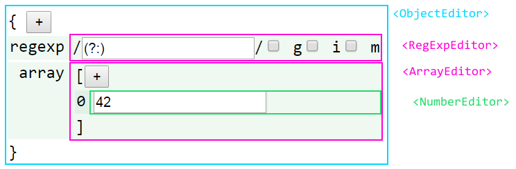
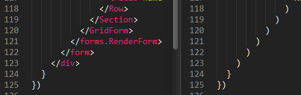
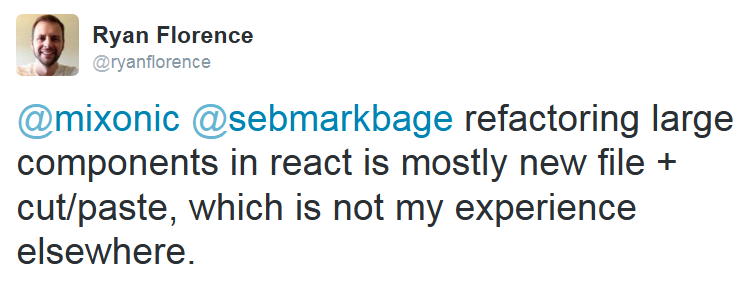
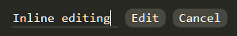

React
Components
- What is React?
- What is a React component?
- Component "types"
- Reusable components
- The obligatory "OMG WebSockets" bit
What is React?
In its own words...
React is a JavaScript library for building user interfaces.
Just the UI
Lots of people use React as the V in MVC.
- This is carefully worded! (More on that later...)
- If you've ever used a DOM builder, rendering with React will feel familiar.
- It also solves some of the problems you'll have encountered.
Virtual DOM
React uses a virtual DOM diff implementation for ultra-high performance.
It can also render on the server using Node.js — no heavy browser DOM required.
Sweet!
Data flow
React implements one-way reactive data flow which reduces boilerplate and is easier to reason about than traditional data binding.
What is a React component?
A chunk of UI
(React dev)
A component renders by returning a single ReactElement
var HelloWorld = React.createClass({ render() { return <h1>Hello world!</h1> } })
Aside: JSX
<h1>Hello world!</h1>
...is equivalent to...
React.createElement('div', null, 'Hello world!')
- Transpilaton is done with an in-browser transformer (for quick prototyping) or a build step.
- Also supports ES6 transforms!
"Give it 5 minutes"...
...it'll give you them back later, plus interest.
A component takes props
var Bulb = React.createClass({ getDefaultProps() { return {on: false} }, render() { var status = this.props.on ? 'on' : 'off' return <img src={`img/bulb-${status}.png`}/> } })
(Treat them as if they're immutable)
<Bulb on={false}/>
<Bulb on={true}/>
- Prop passing is what gives you the one-way data flow.
- Props flow down the component hierarchy.
- With JSX, using components feels like using custom elements.
- As good a fit for a component being "a chunk of UI" as you could hope for?
A component manages its own mutable state
var StatefulSwitch = React.createClass({ getInitialState() { return {on: false} }, toggle() { var on = !this.state.on this.setState({on}) }, render() { var status = this.state.on ? 'on' : 'off' return <button type="button" onClick={this.toggle}> {status} </button> } })
<StatefulSwitch/>
Simple inter-component communication via callback props
var Switch = React.createClass({ propTypes: { on: React.PropTypes.bool.isRequired }, toggle() { this.props.onChange(!this.props.on) }, render() { var status = this.props.on ? 'on' : 'off' return <button type="button" onClick={this.toggle}> {status} </button> } })
Pass a callback down as a prop.
<Switch onChange={this.onSwitchChanged}/>
Call it to communicate changes back up.
A component has lifecycle hooks
React.createClass({ // About to render for the first time componentWillMount() { ... }, // Rendered for the first time componentDidMount() { ... }, // Receiving new props - a chance to react to changes componentWillReceiveProps(nextProps) { ... }, // A chance to cancel re-rendering - defaults to true shouldComponentUpdate(nextProps, nextState) { ... }, // About to re-render componentWillUpdate(nextProps, nextState) { ... }, // Finished re-rendering componentDidUpdate(prevProps, prevState) { ... }, // About to be removed componentWillUnmount() { ... } })
Putting it all together: composition
var Room = React.createClass({ getInitialState() { return {switchOn: false} }, onSwitchChanged(switchOn) { this.setState({switchOn}) }, render() { return <div className="Room"> <Bulb on={this.state.switchOn}/> <Switch on={this.state.switchOn} onChange={this.onSwitchChanged} /> </div> } })
Here we have a stateful Room component which manages some "switchOn" state
It passes that state as a prop to Bulb and Switch
It also passes Switch a callback function so it can let Room know when the user has clicked the button and what the new "on" state should be.
Component "types"
A component is a component is a component...
...but they naturally end up playing different roles in React apps:
- Top-level "controller" components
- App/model specific structural/organisation components
- Reusable components
These are just emergent properties of building apps with components, rather than baked-in framework concepts.
Leaf components are going to be mostly views, and as you go up the hierarchy they are going to look more and more like controllers.
...unfortunately, if you haven't played with React yet, this looks like a terrible idea and is a show-stopper for a lot of people...
Since we want people to try it out, we downplayed [controllers] in our marketing talks.
Refactoring components
(applies to components of all sizes!)
- Before example: CrucibleStats.jsx
~30 pieces of state and a similar number of methods - albeit organised for extraction.
- After example: DinnerTime.jsx
Also an example of a simple "controller" component implemented like a state machine, coordinating app-specific structural components.
Extracting components
- Cut and paste into a new module - any component-specific state, props, methods & render() code.
- Pass any other state the component depended on as props.
- Pass callback props in lieu of setState().
- Add more props with defaults to the component as required for customisation.
(beware YAGNI!)
Reusable components
- Components which act like black boxes.
- The user need only know which props they expect.
- Usually take callback props to communicate back with their containing component.
- Might also expose some public methods if data needs to be pulled from them.
- For editing components: a value/onChange protocol is becoming common.
Reusable component example
<EditInput/>
A text input with submit & cancel buttons which handles keyboard events to finish
Source: [EditInput.jsx](https://github.com/insin/talks/tree/master/belfast-js-2014-12/EditInput.jsx)
Note this doesn't work nicely embedded here because impress.js and Hovercraft! have already registered key event handlers on the document, such as space, left right and p.
React.js uses event delegation for performance, registering a single event handler at the top of the real DOM, so we can't prevent the event from bubbling up.
The obligatory "OMG* WebSockets" bit
* OMG-ness may vary by network connectivity
Mixins
Components also support mixins as a means of code reuse.
- Mixins are objects which have their properties merged into the component's prototype.
- React will also ensure that any lifecycle methods in mixins get called too.
ReactFireMixin
Firebase provides a mixin for React components
var Comment = React.createClass({ mixins: [ReactFireMixin], getInitialState() { return {comment: {}} }, componentDidMount() { var {id} = this.props this.bindAsObject( new Firebase(`${BASE_URL}/items/${id}`), 'comment' ) }, render() { /* ... */ } })
react-hn
I used this to implement react-hn, using the Hacker News Firebase API.
- Almost everything is live.
- Re-rendering happens automagically.
- Lifecycle hooks are used to detect loading of new comments.
- A CommentThread model is built up as comments pop in.
- react-router handles routing - simple and powerful.
Start hacking today!
<!DOCTYPE html> <head> <meta charset="UTF-8"> <script src="http://fb.me/react-with-addons-0.12.1.js"> </script> <script src="http://fb.me/JSXTransformer-0.12.1.js"> </script> </head> <body> <script type="text/jsx;harmony=true" src="app.jsx"> </script> </body>
var App = React.createClass({ render() { return <div></div> } }) React.render(<App/>, document.body)
Resources
- Thinking in React
- React Training (rpflorence/react-training)
- Highly recommended!
- react-router (rackt/react-router)
- ReactFireMixin (firebase/reactfire)
- JSX Compiler Service
- Get comfy with JSX & ES6 transforms